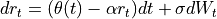
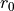

quantlib.models.shortrate.onefactormodels.hullwhite.HullWhite¶
- class HullWhite(YieldTermStructure term_structure=YieldTermStructure(), Real a=0, Real sigma=0)¶
Bases:
VasicekSingle-factor Hull-White (extended Vasicek) model.
The standard single-factor Hull-White model is defined by

where
 and
and  are constants.
are constants.Warning
When the term structure is relinked the  parameter of the underlying Vasicek model is not updated:
- __init__(*args, **kwargs)¶
Methods
__init__(*args, **kwargs)calibrate(self, list helpers, ...)convexity_bias(Real future_price, Time t, ...)Futures convexity bias
discount_bound(self, Time now, ...)params(self)set_params(self, Array params)Attributes
Lambdaabdynamicsr0sigma- calibrate(self, list helpers, OptimizationMethod method, EndCriteria end_criteria, Constraint constraint=Constraint(), vector[Real] weights=[], vector[bool] fix_parameters=[])¶
- static convexity_bias(Real future_price, Time t, Time T, Real sigma, Real a)¶
Futures convexity bias
i.e., the difference between futures implied rate and forward rate calculated as in [1].
- Parameters:
t (float) – maturity date of the futures contract
T (float) – maturity of the underlying Libor deposit
sigma (float) – annual volatility of the short rate
a – mean-reversion parameter
Notes
t and T should be expressed in yearfraction using deposit day counter, future_price is futures’ market price.